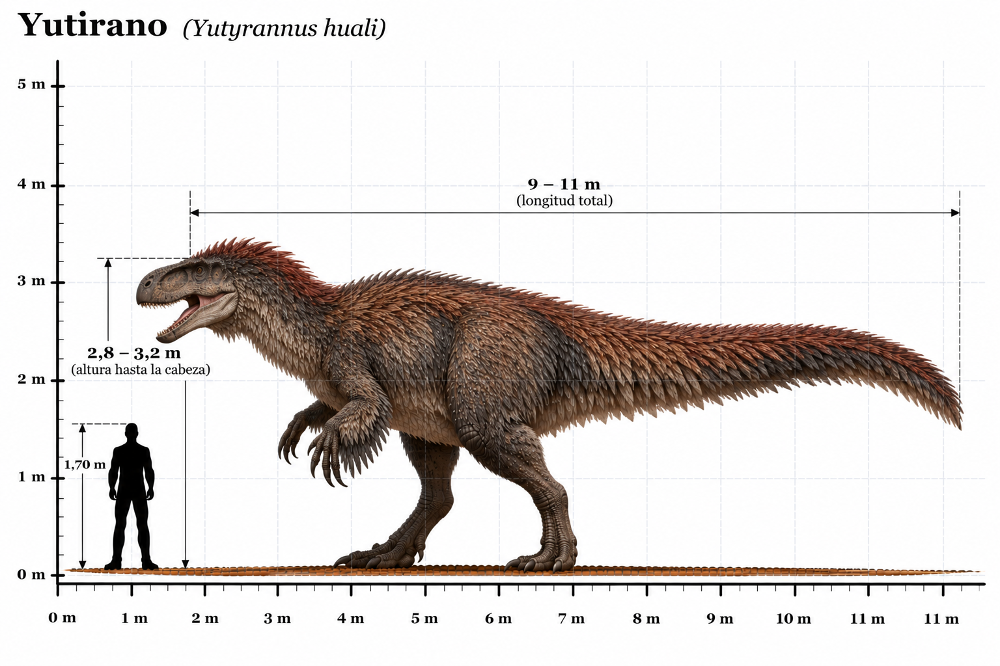

Yutyrannus huali

El Yutyrannus huali fue un gran dinosaurio terópodo carnívoro que habitó Asia durante el Cretácico temprano, hace aproximadamente 125 millones de años. Sus restos fósiles fueron descubiertos en China, concretamente en la provincia de Liaoning. Su nombre significa "tirano emplumado", en referencia a una de sus características más importantes: la presencia de plumas en diferentes partes del cuerpo. El descubrimiento de Yutyrannus proporcionó una de las evidencias más destacadas de que algunos grandes dinosaurios carnívoros poseían un recubrimiento de plumas. A diferencia de otros grandes tiranosauroideos, sus fósiles conservan impresiones de estructuras filamentosas semejantes a plumas, que pudieron contribuir al aislamiento térmico. Poseía un cráneo grande, dientes afilados, fuertes extremidades posteriores y brazos relativamente desarrollados, terminados en tres dedos provistos de garras. El clima de su entorno pudo ser relativamente frío para los estándares del Cretácico, con temperaturas estacionales reducidas. Por este motivo, se considera posible que su plumaje desempeñara una función importante en la conservación del calor corporal. Aunque estaba emparentado con Tyrannosaurus rex, vivió decenas de millones de años antes y pertenecía a una rama más primitiva de los tiranosauroideos.
- Grupo: Terópodo (tiranosauroideo).
- Familia: Proceratosauridae (proceratosáuridos, clasificación discutida).
- Período: Cretácico temprano (hace aproximadamente 125 millones de años).
- Alimentación: Carnívoro.
- Longitud: Aproximadamente 8–9 metros.
- Altura: Aproximadamente 2,5–3 metros hasta la cadera.
- Localización: Asia (actual China, provincia de Liaoning).
